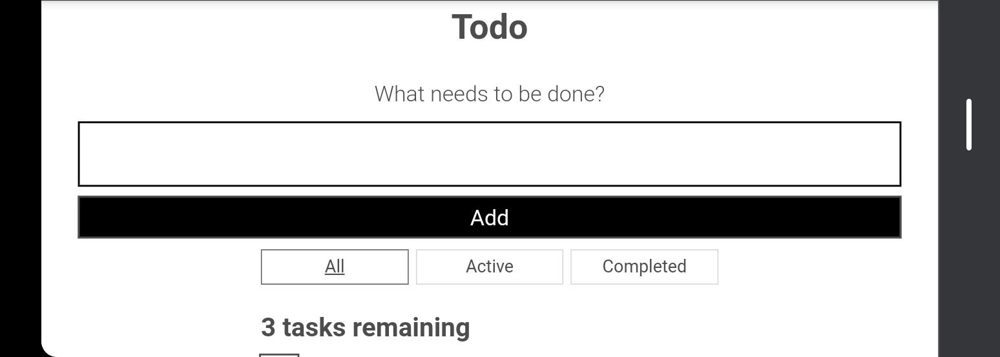
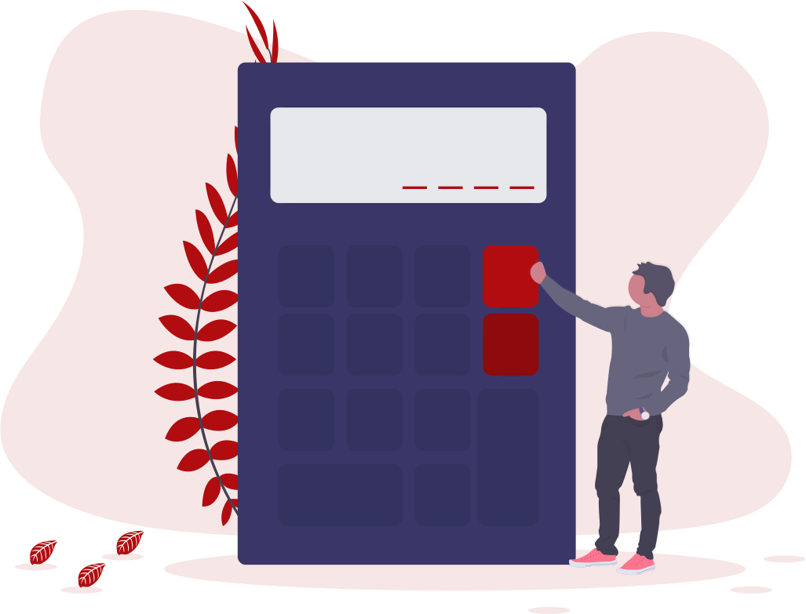

Todo App
A web app that takes tasks from the user and arranges them. There is also a filter that lets the user check his tasks based of 'All', 'Active' & 'completed'.

Rock Paper Scissors
A web app that simulates the rock, paper, scissors game. The user picks one and then computer picks, the possible outcomes are Win, Draw, Lose.

Find the treasure
A GUI made with tkinter python. A treasure is place at a random location, the user is to guess where the treasure is the closer the user gets to the treasure the hotter it gets the farther the colder it gets.

Calculator
A GUI made with tkinter python. A Calculator that performs basic operations